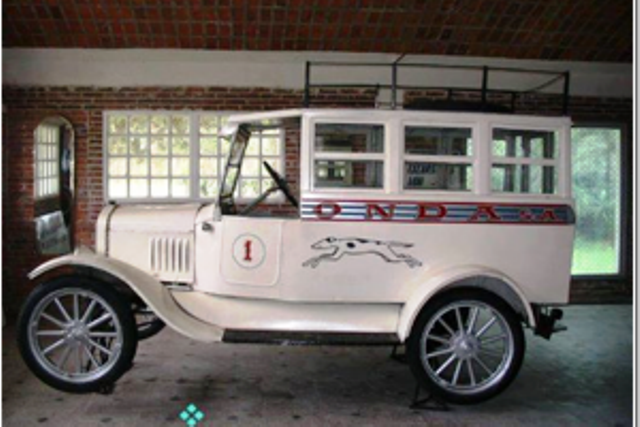

First Colonia–Montevideo Trip
On November 25, 1925, Eloy G. Perazza completed the pioneering journey in a Ford T, marking the beginning of interdepartmental transport.

.jpg)
A journey through the legacy of the bus company that marked Uruguay’s history
On November 25, 1925, Eloy G. Perazza completed the pioneering journey in a Ford T, marking the beginning of interdepartmental transport.
In 1935, the company was organized as a cooperative. Just two years later, its growth was meteoric: over 1,000,000 passengers and 6,000,000 km traveled.
1947–1952 — In 1947, the GMC 161 (“Sea Wave”) arrived. In 1948, 12 factory-built units joined the fleet. Rear engines and lower luggage bays were introduced. Between 1951–1952, the GMC PD-4103 “Centella del Plata” arrived.


ONDA’s first bus with air suspension, restroom, and panoramic windows, raising comfort on long-distance trips and supporting route expansion.
Agreement to improve routes and services: passenger pavilion in Colonia and station in Termas del Arapey, strengthening connectivity.
High-speed vessels were introduced, shortening the crossing of the Río de la Plata and improving international connections.
GMC PD-4107/4905: more space and efficiency for long-distance routes, consolidating ONDA’s presence in national and international travel.


Inaugurated on September 16, 1976: connected Fray Bentos and Puerto Unzué, reducing travel times and strengthening the Montevideo–Buenos Aires corridor.
Since 1980, a pool with CITA, COT, and Expreso General Urquiza operated the Montevideo–Buenos Aires highway service, taking advantage of the new bridge.
Operations rapidly decreased: from 132 to 48 active buses (1990–1991) and from 1,451 to 1,200 employees, reflecting the company’s final stage.
Eloy G. Perazza was a visionary of Uruguayan transportation. In 1925, with courage and determination, he made the first trip between Colonia and Montevideo, even without passengers, carrying parcels and mail as a symbol of perseverance.
His entrepreneurial spirit led him in 1935 to promote the cooperative organization that would give birth to ONDA, transforming the way Uruguayans traveled and incorporating technical innovations that defined an era.
Legacy: uniting Uruguay under the values of safety, punctuality, and comfort. His example continues to inspire those who believe that progress begins with the courage to take the first step.